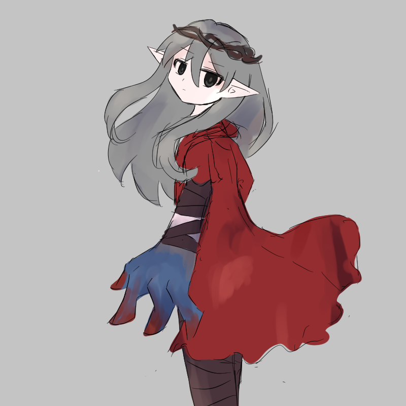

年齢
25歳
❁Take Us to the Future You're Building.❁
❁Not Just That Glamour.❁
キャラクター一覧に戻る
25歳
女性
159cm
私/君
主に蒼の傷跡
主に紅の傷跡
「これは“既知”。けれど、一度流れた川の水を飲めたのは私だけ。だから、＿＿メイベル。それが私の名前、だよ。」
「存在の証が溢れるこの場所、初めて巡り会った運命。私は、それが大切だから。」
「私は、＿＿より澄んだ中、平和の種が埋められた場所で、君と手を繋いで進みたい。だから、私と君は争う理由を持ち得ない。だよね？」
銀色の長い髪が特徴的な、整った容姿かつミステリアスな雰囲気を纏う女性職員です。
かなり独特な言葉遣いを用います。主に絵本や詩などの影響と見られますが、ここまで話が通じないのは稀でしょう。どうやらこれを敬語の代わりにしている節があり、畏まるほど余計に言葉が難解になり悪化していきます。できる限り、畏まる必要がある現場に出さないことを推奨します。
こういった神秘や謎を連想させる容姿や言動とは裏腹に、有り体に言ってしまえば”アホ”な人間です。非常に抜けており、ぼんやりとしています。どうやら精神が年齢相応に成長していないようで、T-01-68の放った蝶にふらふらとついていく様子すら観察できます。そこに蝶への特別な執着があるわけですらなく、ただ釣られて動いているだけであり、総じて相当自我がない人間と思われます。
管理人様におかれましては、そこまで気にかけなくても良い存在かもしれませんね。今は。